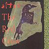

Celtic Lyrics Corner > Artists & Groups > Altan > The Red Crow
|  |
The Red Crow
(1990) |
| Tracks : |
1. Yellow Tinker/Lady Montgomery/The Merry Harriers
2. Con Cassidy's/Dusty Millar 3. The Flower Of Magherally 4. Brenda Stubbert's/Breen's/The Red Box 5. Inis Dhún Rámha 6. Jimmy Lyon's/The Teelin/The Red Crow/The Broken Bridge 7. Moll Dubh A' Ghleanna 8. The Wedding Jig/Hiudaí Gallagher's March/James Byrne's/Mickey Doherty's/Welcome Home Grainne 9. Mallaí Chroch Shlí 10. Tommy Bhetty's Waltz 11. The Emyvale/Ríl Gan Ainm/The Three Merry Sisters Of Fate |